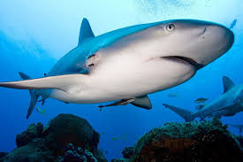

A cápaszerűek vagy közismertebben cápák (Selachimorpha)
a szűkebb értelemben vett porcos halak (Chondrichthyes)
osztályába tartozó öregrend. Őslénytani szempontból az Elasmobranchii (kopoltyúfedő nélküliek) rendjének alrendje, amely a bazális csoporttól (Cladoselachii, antennás cápák) elkülönülő porcos halakat jelenti. Az antennás cápák már a devon második felében megjelentek,
a valódi cápák a karbonban.

Ismeretesek fog nélküli fajaik is, melyek a tengervízből planktonokat szűrnek ki. A többi fajuk mind ragadozó, elsősorban halakkal, rákokkal, kagylókkal táplálkoznak, de a nagyobb termetű cápafajok tengeri emlősöket is zsákmányolnak, így az emberre is veszélyesek lehetnek (a fajok 10%-a veszélyes az emberre). Többségük a tengerek lakója, egyes fajok a trópusi folyókban élnek, viszont a bikacápa mind édes-,
mind pedig sós vízben megtalálható.